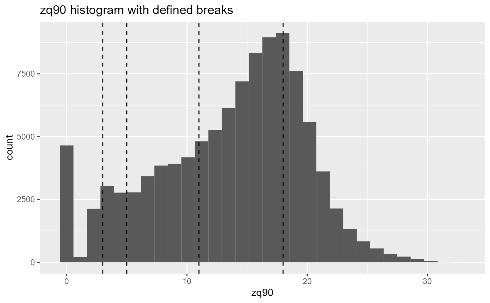
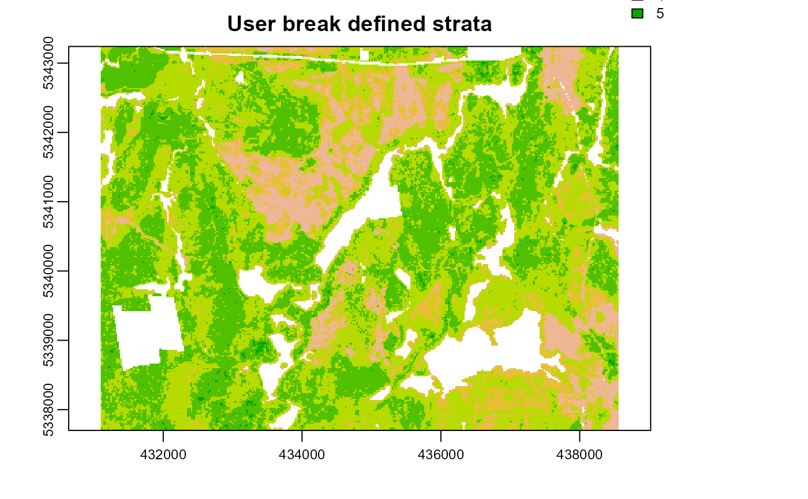
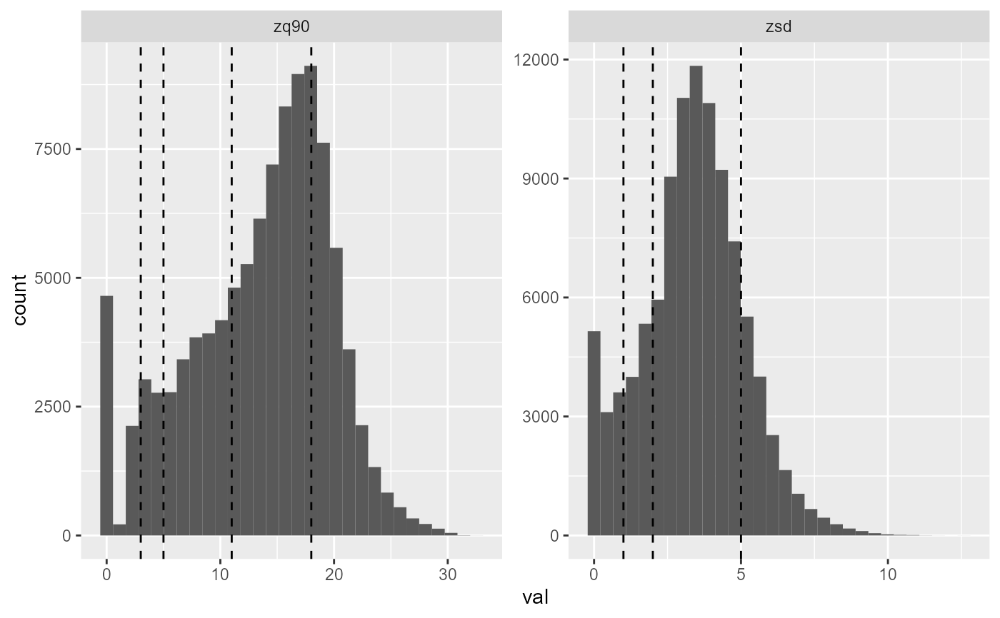
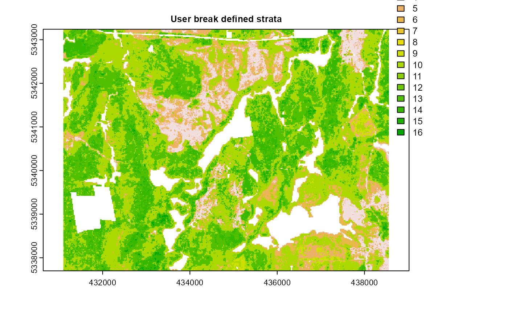
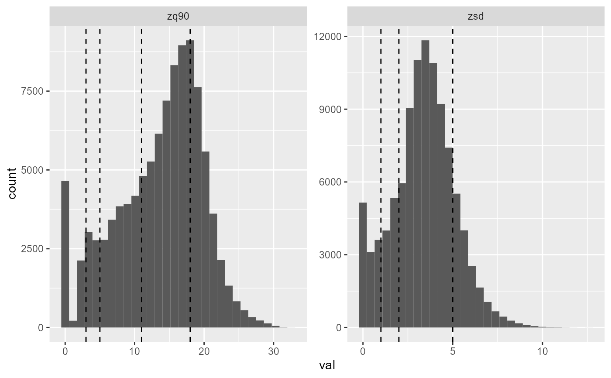
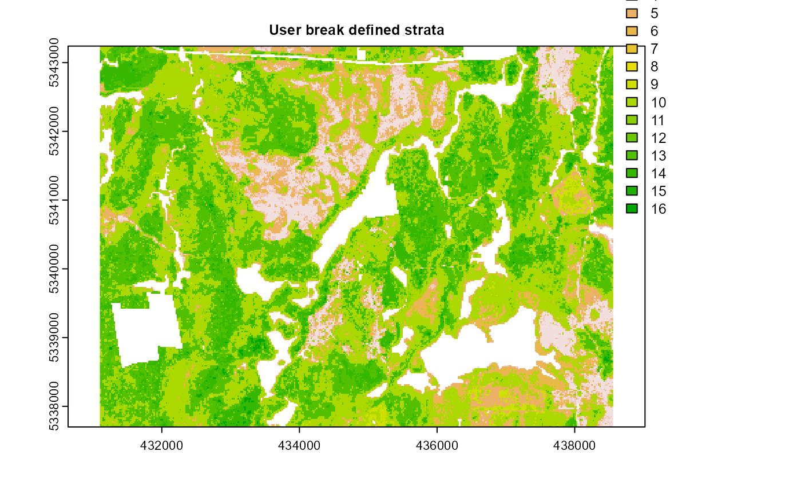

Breaks stratification
strat_breaks.RdStratify metrics raster using user defined breaks
strat_breaks(
mraster,
mraster2 = NULL,
breaks,
breaks2 = NULL,
plot = FALSE,
details = FALSE,
filename = NULL,
overwrite = FALSE,
...
)Arguments
- mraster
Spatraster. Primary covariate raster to stratify.
- mraster2
Spatraster. Secondary covariate raster to stratify.
- breaks
Numeric. Vector of breakpoints for
mraster- breaks2
Numeric. Vector of breakpoints for
mraster2(if provided)- plot
Logical. Plots output strata raster and visualized strata with boundary dividers.
- details
Logical. If
FALSE(default) output is only stratification raster. IfTRUEreturn a list where$detailsis additional stratification information and$rasteris the output stratification spatRaster. @param ... Additional arguments to be passed tokmeansfunction.- filename
Character. Path to write stratified raster to disc.
- overwrite
Logical. Specify whether
filenameshould be overwritten on disc.- ...
Additional arguments for writing files. See
writeRaster.
Value
Returns an output stratification spatRaster or a list when details = TRUE.
When a list is returned:
detailsis a list output of theprcompfunctionrasteris a stratifiedspatRasterbased on quantilesplotis aggplothistogram object showing distribution and break points.
See also
Other stratify functions:
strat_kmeans(),
strat_map(),
strat_osb(),
strat_pcomp(),
strat_poly()
Examples
#--- Load raster ---#
r <- system.file("extdata", "wall_metrics.tif", package = "sgsR")
mr <- terra::rast(r)
#--- create vector breaks ---#
br.max <- c(3, 5, 11, 18)
br.sd <- c(1, 2, 5)
strat_breaks(
mraster = mr$zmax,
breaks = br.max,
plot = TRUE,
details = TRUE
)


#> $details
#> $details$breaks
#> [1] 3 5 11 18
#>
#> $details$breaks2
#> NULL
#>
#>
#> $raster
#> class : SpatRaster
#> dimensions : 277, 373, 1 (nrow, ncol, nlyr)
#> resolution : 20, 20 (x, y)
#> extent : 431100, 438560, 5337700, 5343240 (xmin, xmax, ymin, ymax)
#> coord. ref. : +proj=utm +zone=17 +ellps=GRS80 +towgs84=0,0,0,0,0,0,0 +units=m +no_defs
#> source : memory
#> name : strata
#> min value : 1
#> max value : 5
#>
#> $plot
#> `stat_bin()` using `bins = 30`. Pick better value with `binwidth`.
 #>
strat_breaks(
mraster = mr$zmax,
mraster2 = mr$zsd,
breaks = br.max,
breaks2 = br.sd,
plot = TRUE
)


#> class : SpatRaster
#> dimensions : 277, 373, 1 (nrow, ncol, nlyr)
#> resolution : 20, 20 (x, y)
#> extent : 431100, 438560, 5337700, 5343240 (xmin, xmax, ymin, ymax)
#> coord. ref. : +proj=utm +zone=17 +ellps=GRS80 +towgs84=0,0,0,0,0,0,0 +units=m +no_defs
#> source : memory
#> name : strata
#> min value : 1
#> max value : 16
#>
strat_breaks(
mraster = mr$zmax,
mraster2 = mr$zsd,
breaks = br.max,
breaks2 = br.sd,
plot = TRUE
)


#> class : SpatRaster
#> dimensions : 277, 373, 1 (nrow, ncol, nlyr)
#> resolution : 20, 20 (x, y)
#> extent : 431100, 438560, 5337700, 5343240 (xmin, xmax, ymin, ymax)
#> coord. ref. : +proj=utm +zone=17 +ellps=GRS80 +towgs84=0,0,0,0,0,0,0 +units=m +no_defs
#> source : memory
#> name : strata
#> min value : 1
#> max value : 16